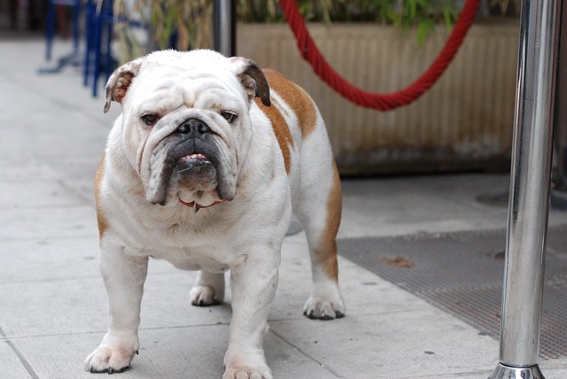

英國鬥牛犬
外表
鬥牛犬有寬闊的頭部以及肩膀，還有較突出的下顎、皺眉頭，眼距寬、雙眼圓且色深，鼻頭上方有一層特有的皺褶，頸部下方皮膚下垂，嘴皮下垂、牙齒尖偶爾前突。鬥牛犬毛短且光滑平順，合格的配色有紅褐色、淡黃褐色、白色、虎斑色以及前四種配色之斑點混色。與其他被斷尾、剪尾的短尾犬種不同，鬥牛犬是少數天生短尾的犬種之一，其尾可能直或呈螺旋狀。
性格
鬥牛犬性情應為平靜、溫和、堅決且勇敢的，其行為舉止也應屬平和穩重的。其育種者已經致力於減少、去除此犬種的攻擊性，因此絕大多數的鬥牛犬本性都是友善、有耐心的。牠們傾向與孩童建立相當密切的關係，因此鬥牛犬被認為是極佳的家庭伴侶犬。一般而言，鬥牛犬能與孩童以及其他犬類、寵物和睦相處，能夠被家庭以及各成員所喜愛。牠們並不會在沒有人陪伴的狀況下獨自於庭院裡探索，牠們更傾向在人們的腿上打盹，而不是在院子裡追著球跑。
歷史
鬥牛犬最早的定義係屠夫的鬥牛、熊犬。之所以如此定義，必須歸因於鬥牛犬最早的用途是以一條拴住的公牛以及數條鬥牛犬之間的搏鬥勝者作為賭博標的。能夠緊咬住公牛的鼻子並且使其倒地的鬥牛犬將是勝者，而在此過程中，因為公牛頂撞、拋甩或者踩踏致殘甚至致死的鬥牛犬亦不在少數。最後，古英國鬥牛犬與巴哥犬混交，牠們的後代衍生出較短的身長、較寬的肩寬，還有變短的頭蓋骨。
飼養注意事項
因先天遺傳，髖關節容易出現問題，需避免爬山、上下樓梯等運動
非常容易中暑，多注意氣溫及環境通風，並隨時提供充足水分
最寬但氣管狹窄，平時呼吸聲大、睡覺會打呼
皮脂分泌旺盛，容易罹患皮膚病
